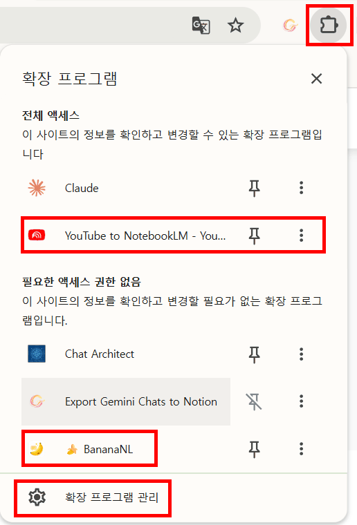

크롬 도구 · 확장 프로그램
확장 프로그램 사용법
크롬에 기능을 더하는 확장 프로그램을 설치하고, 권한을 읽고, 접근 범위를 줄이고, 지우는 방법입니다.
알고 쓰기
- 무엇인가
- 내 크롬 안에서 돌아가는 작은 프로그램입니다. 대부분 구글이 아닌 외부 개발자가 만듭니다.
- 왜 조심하나
- «모든 사이트의 데이터를 읽고 변경» 권한이 있으면, 같은 크롬으로 연 나이스·업무관리시스템·성적 화면도 읽을 수 있습니다.
- 원칙
- 필요한 것만 · 믿을 만한 것만 · 필요한 사이트에서만 · 다 쓰면 지운다
- 조건
- 학교 계정으로 로그인한 크롬은 관리자가 설치를 막거나 허용 목록만 열어 둘 수 있습니다.
1 설치하기
- 크롬에서 Chrome 웹 스토어(chromewebstore.google.com)를 열고 이름으로 검색합니다. 이름이 비슷한 확장 프로그램이 여러 개 있으니 개발자 이름까지 봅니다.
- 설치 전에 상세 페이지에서 개발자 · 사용자 수 · 평점과 리뷰 · 최근 업데이트 날짜 · 개인정보 보호 관행을 확인합니다(아래 5절 점검표).
- Chrome에 추가 → 권한 안내 창을 끝까지 읽고 확장 프로그램 추가를 누릅니다.
- 주소창 오른쪽 퍼즐 모양 아이콘을 누르면 설치된 목록이 보입니다. 압정 아이콘을 누르면 도구 모음에 고정됩니다.

2 권한 읽는 법
| 퍼즐 메뉴의 분류 | 뜻 | 판단 |
|---|---|---|
| 전체 액세스 | 내가 여는 페이지의 내용을 읽고 바꿀 수 있습니다. 입력한 글, 화면의 표도 포함됩니다. | 업무용 크롬에서는 사이트 액세스를 줄여서만 씁니다 |
| 특정 사이트에서만 | 지정한 사이트(예: youtube.com)에서만 동작합니다. | 권장하는 상태 |
| 필요한 액세스 권한 없음 | 페이지 내용에 접근하지 않습니다. | 상대적으로 안전 |
3 접근 범위 줄이기 · 끄기 · 지우기
- 퍼즐 아이콘 → 확장 프로그램 관리(또는 주소창에
chrome://extensions) → 해당 확장 프로그램의 세부정보를 엽니다. - 사이트 액세스를 특정 사이트에서로 바꾸고 필요한 주소만 넣습니다(예:
youtube.com). 그러면 학교 업무 시스템 같은 다른 사이트에서는 동작하지 않습니다. 개발자가 막아 둔 경우에는 바꿀 수 없습니다. - 쓰지 않을 때는 스위치를 끄고, 필요 없어지면 삭제합니다.
업무와 실습을 나누는 가장 확실한 방법 — 크롬 오른쪽 위 프로필 사진 → 추가로 실습용 프로필을 따로 만들고, 확장 프로그램은 그 프로필에만 설치합니다. 나이스·업무관리시스템은 확장 프로그램이 없는 업무용 프로필에서만 엽니다.
4 예시 — YouTube to NotebookLM
유튜브 영상을 Gemini Notebook(NotebookLM) 소스로 바로 보내는 외부 확장 프로그램입니다. 설명에 따르면 지금 보는 영상뿐 아니라 재생목록·채널·검색 결과의 영상도 보낼 수 있습니다. 없어도 Notebook에서 소스 추가 → YouTube로 주소를 넣으면 똑같이 할 수 있으므로(사례 5), 설치는 선택입니다.

- 설치 후 유튜브 영상을 새로고침하면 Notebook 버튼이 보입니다.
- 버튼을 누르고 보낼 노트북을 고르거나 새 노트북을 만듭니다. 처음 누를 때 Notebook에 로그인된 계정이 학교 계정인지 확인합니다.
- Gemini Notebook을 열어 소스 목록에 영상이 들어왔는지 확인하고 질문을 시작합니다.
- 설치 직후 3절대로 사이트 액세스를 youtube.com으로 줄입니다.
| 한 교사의 크롬에 있던 확장 프로그램 | 하는 일 (스토어·검사 사이트 설명 기준) | 확인할 점 |
|---|---|---|
| YouTube to NotebookLM | 유튜브 영상·재생목록·채널·검색 결과를 Gemini Notebook으로 보냄. 좋아요·공유 옆에 Notebook 버튼을 붙임 | 전체 액세스 권한. youtube.com으로 줄이기 |
| BananaNL | NotebookLM에서 그림·슬라이드를 만들 때 쓰는 프롬프트 스타일을 저장·관리하고 공유 | NotebookLM 밖의 사이트(외부 AI 서비스, 개발사 서버)에 접근하는 권한이 있다고 검사 사이트에 나옴. 설치 전 권한 확인 |
5 설치 전 점검표
① 출처 — 구글 공식 프로그램인지, 개발자가 누구인지 봅니다. 사용자 수가 적거나, 오래 업데이트되지 않았거나, 설명에 없는 권한을 요구하면 설치하지 않습니다.
② 권한 — «모든 사이트의 데이터를 읽고 변경»이 필요한지 따져 보고, 필요하면 설치 직후 사이트 액세스를 줄입니다.
③ 프로필 — 업무용 크롬 프로필(나이스·업무관리시스템을 여는 곳)에는 설치하지 않습니다.
④ 학교 방침 — «관리자가 차단함»이 나오면 학교 방침이므로 따릅니다. 관리자가 확장 프로그램 요청을 열어 두었다면 요청 버튼으로 승인을 받을 수 있습니다.
⑤ 공용 PC · 학생 — 학교 공용 컴퓨터에는 개인적으로 설치하지 않고 정보 담당 교사와 먼저 상의합니다. 학생에게 설치를 안내하지 않습니다.
② 권한 — «모든 사이트의 데이터를 읽고 변경»이 필요한지 따져 보고, 필요하면 설치 직후 사이트 액세스를 줄입니다.
③ 프로필 — 업무용 크롬 프로필(나이스·업무관리시스템을 여는 곳)에는 설치하지 않습니다.
④ 학교 방침 — «관리자가 차단함»이 나오면 학교 방침이므로 따릅니다. 관리자가 확장 프로그램 요청을 열어 두었다면 요청 버튼으로 승인을 받을 수 있습니다.
⑤ 공용 PC · 학생 — 학교 공용 컴퓨터에는 개인적으로 설치하지 않고 정보 담당 교사와 먼저 상의합니다. 학생에게 설치를 안내하지 않습니다.
핵심 원리
확장 프로그램은 «내 브라우저 안에서 도는 남의 코드»입니다. 편리함은 권한의 크기와 맞바꾼 것이므로, 권한은 최소로, 동작 범위는 필요한 사이트로, 업무 환경과는 분리합니다. 같은 일을 기본 기능으로 할 수 있으면 기본 기능을 씁니다.
확장 프로그램은 «내 브라우저 안에서 도는 남의 코드»입니다. 편리함은 권한의 크기와 맞바꾼 것이므로, 권한은 최소로, 동작 범위는 필요한 사이트로, 업무 환경과는 분리합니다. 같은 일을 기본 기능으로 할 수 있으면 기본 기능을 씁니다.
문제 해결 — 버튼이 안 보이면 페이지를 새로고침하고, 퍼즐 메뉴에서 확장 프로그램이 켜져 있는지 봅니다. 크롬이나 사이트가 업데이트되면 확장 프로그램이 한동안 동작하지 않을 수 있습니다. 이때는 기본 기능(Notebook의 소스 추가 등)으로 진행합니다.
구글 렌즈는 확장 프로그램이 아니라 크롬 기본 기능입니다 → 구글 렌즈 사용법